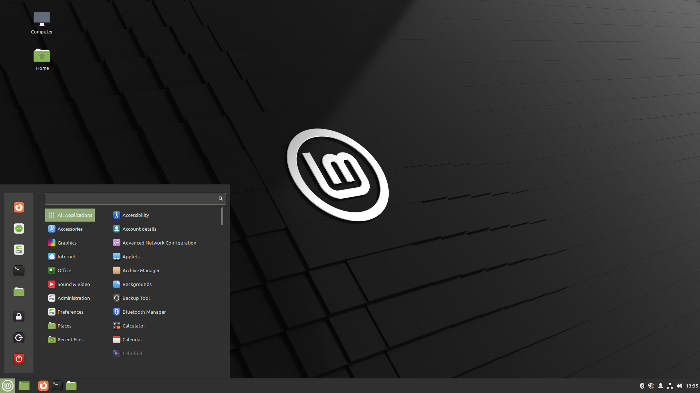
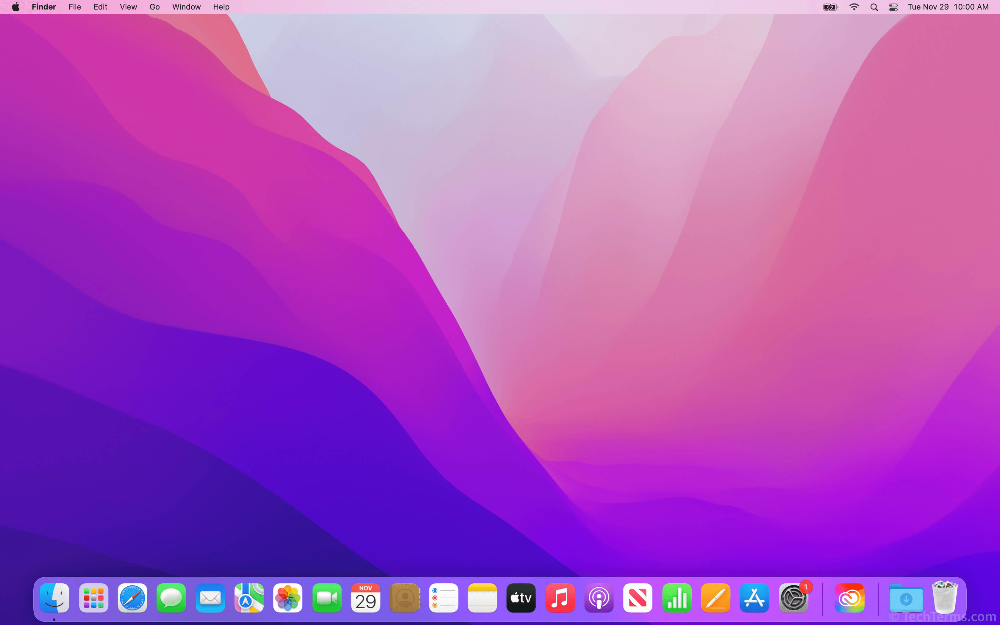

Operating System paling terkenal?
Terdapat ratusan Operating System yang ada saat ini, namun diantara semuanya terdapat 3 Operating System yang paling dikenal, diantaranya:
Windows
Windows menawarkan berbagai fitur dan kemampuan yang membuatnya menjadi pilihan ideal bagi pengguna dengan berbagai kebutuhan. Sistem operasi ini...

Linux
Linux telah berkembang pesat dari proyek hobi sederhana menjadi sistem operasi yang kuat dan serbaguna. Dengan komunitas open source...

Mac OS
macOS telah memainkan peran penting dalam perkembangan industri kreatif, dan terus menjadi platform pilihan bagi para profesional...
